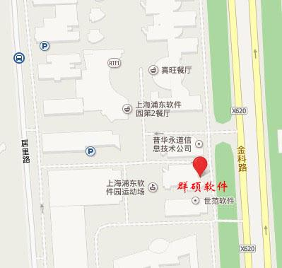
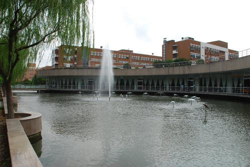
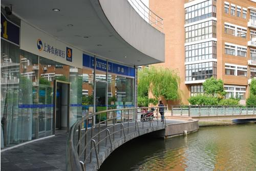
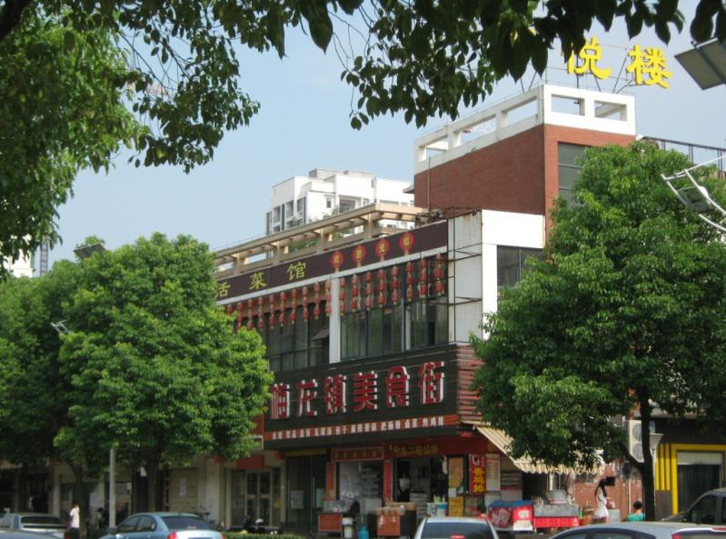
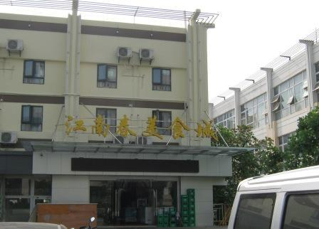
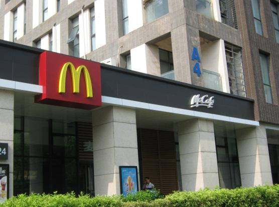

-
周边生活环境
- 上海
-
住房
公司宿舍：
公司有专门提供给实习生的宿舍哦，上海是六人间，入住时公司提供床上用品三件套，有wifi、空调、独立卫生间、热水器及阳台。宿管房间为107，内有洗衣机、微波炉、冰箱可供使用。早晚有班车接送上下班。费用：500/月（包括水电费、宽带费）
地址：胜利路188号兴发创运工业园B4幢1F
对于正式员工，周边有多处地方可选择租房的。以下罗列一些信息供参考啦~
张江镇、杨家镇、龙阳路地铁站、北蔡、花木等区域都是不错的租房区域，均有公交或地铁直达软件园。参考价格为一居室：800-1500；两居室：1600-3000；三居室：3000-4500。
通过搜房、58同城、赶集网及张江家园网查询租房信息，或与房产中介直接联系。
中介 联系人 联系方式 地点 到公司距离 基本配置 价格（元） 天景房产 徐小姐 18916022888 张江 公交2至6站 合租，一人一间，电视、书桌、衣柜、空调单配，卫生间、洗衣机合用 650-950 中原地产 劝先生 15900949215 孙桥 公交6站 合租，一人一间，电视、书桌、衣柜、空调单配，卫生间、洗衣机合用 700-1000 中原地产 蒋小姐 15021132758 川沙 地铁5站 合租，一人一间，电视、书桌、衣柜、空调单配，卫生间、洗衣机合用 500-900 申城房产 朱先生 13816732146 金桥 公交7站 合租，一人一间，电视、书桌、衣柜、空调单配，卫生间、洗衣机合用 500-700 -
餐饮
食堂餐厅：
群硕软件上海位于上海浦东软件园，园区内有多家餐厅。其中，离公司较近的，有上海浦东软件园1号和2号餐厅，餐厅环境优美，种类多样，味道可口，价格适中。一般人均消费在15元左右。

外送：
除了园区内的餐厅，公司周边也有许多小餐馆提供外送服务。价格实惠，方便快捷。
- 东北菜馆：13162287116 / 13262638777 (15元/人)
- 原野快餐：15026763767 / 13788932070 (15元/人)
- 湘妃阁： 18817387538 / 18217093859 (15元/人)
当然，你也可以选择肯德基、必胜客等外卖，都可以送达。
超市小吃：
园区内，在第2餐厅旁边有一家罗森，可以挑选一些小食或便当。
金科路地铁站附近，有许多各地小吃（如武汉热干面、农家小土豆、酱香饼等），可供选择。

- 武汉
- 住房
如果要租房的话，可就近选择光谷软件园附近小区，如清江山水、关南社区、坐标城、芭比伦堡等，也可选择在洪山区关山、光谷鲁巷商圈、关山大道沿线、光谷大道沿线、雄楚大道沿线、三环沿线等区域，这些区域均有公交直达光谷软件园，车程约30~40分钟，公交价格为2元/人次。参考价格为一居室：600-1000元；两居室：1000-2000元；三居室：2000-3500。
通过搜房、58同城、赶集网及好租网查询租房信息。
房源可参考如下信息：
中介 到公司距离 基本配置 价格（元） 拿铁公寓 步行5分钟 合租，一人一间，电视、书桌、衣柜、空调单配，卫生间、洗衣机合用 600-1100 关南社区 步行10分钟 合租，一人一间，电视、书桌、衣柜、空调单配，卫生间、洗衣机合用 600-900 清江山水 步行10-15分钟 合租，一人一间，电视、书桌、衣柜、空调单配，卫生间、洗衣机合用 500-950 坐标城 步行15分钟 合租，一人一间，电视、书桌、衣柜、空调单配，卫生间、洗衣机合用 600-900 芭比伦堡 步行15分钟 合租，一人一间，电视、书桌、衣柜、空调单配，卫生间、洗衣机合用 650-1000 中建康城 步行15分钟 合租，一人一间，电视、书桌、衣柜、空调单配，卫生间、洗衣机合用 600-900 刘家村 步行15分钟 合租，一人一间，电视、书桌、衣柜、空调单配，卫生间、洗衣机合用 200-500 后山小区 步行15分钟 合租，一人一间，电视、书桌、衣柜、空调单配，卫生间、洗衣机合用 200-500 万科城市花园 步行30分钟，直达公交2站 合租，一人一间，电视、书桌、衣柜、空调单配，卫生间、洗衣机合用 500-1200 当代花园 步行30分钟，直达公交2站 合租，一人一间，电视、书桌、衣柜、空调单配，卫生间、洗衣机合用 500-1200 政院小区 公交5站 合租，一人一间，电视、书桌、衣柜、空调单配，卫生间、洗衣机合用 450-800 汽发小区 公交7站 合租，一人一间，电视、书桌、衣柜、空调单配，卫生间、洗衣机合用 500-800 
-
餐饮
公司旁有多种餐饮、小吃可供选择，囊括五湖四海众多风味，可满足不同口味、不同层次的饮食需求。
小吃便餐：
公交站到公司的途中，有许多特色小吃可供早餐、加餐、夜宵选择，便宜方便快捷。

园区食堂：
公司所在园区有2个食堂，环境干净整洁、菜色丰富多样，价格公道合理，是平时就餐的不二之选。食堂位置分布合理，步行5分钟即可到达。

其他：
- 公司正门紧临麦当劳，步行1分钟即达；
- 公司对面有中百超市，可提供便当、零食、饮料以及日常用品；
- 公司步行10~15分钟可到达光谷天地，有大型的沃尔玛超市、美食广场及各式餐饮场所。